Customize plots of incidence
Thibaut Jombart, Zhian N. Kamvar
2025-06-19
Source:vignettes/customize_plot.Rmd
customize_plot.RmdThis vignette provides some tips for the most common customisations
of graphics produced by plot.incidence. Our graphics use
ggplot2, which is a distinct graphical system from base
graphics. If you want advanced customisation of your incidence plots, we
recommend following an introduction to ggplot2.
Example data: simulated Ebola outbreak
This example uses the simulated Ebola Virus Disease (EVD) outbreak
from the package outbreaks:
ebola_sim_clean.
First, we load the data:
library(outbreaks)
library(ggplot2)
library(incidence)
onset <- ebola_sim_clean$linelist$date_of_onset
class(onset)
#> [1] "Date"
head(onset)
#> [1] "2014-04-07" "2014-04-15" "2014-04-21" "2014-04-27" "2014-04-26"
#> [6] "2014-04-25"We compute the weekly incidence:
i <- incidence(onset, interval = 7)
i
#> <incidence object>
#> [5829 cases from days 2014-04-07 to 2015-04-27]
#> [5829 cases from ISO weeks 2014-W15 to 2015-W18]
#>
#> $counts: matrix with 56 rows and 1 columns
#> $n: 5829 cases in total
#> $dates: 56 dates marking the left-side of bins
#> $interval: 7 days
#> $timespan: 386 days
#> $cumulative: FALSE
i.sex <- incidence(onset, interval = 7, group = ebola_sim_clean$linelist$gender)
i.sex
#> <incidence object>
#> [5829 cases from days 2014-04-07 to 2015-04-27]
#> [5829 cases from ISO weeks 2014-W15 to 2015-W18]
#> [2 groups: f, m]
#>
#> $counts: matrix with 56 rows and 2 columns
#> $n: 5829 cases in total
#> $dates: 56 dates marking the left-side of bins
#> $interval: 7 days
#> $timespan: 386 days
#> $cumulative: FALSE
i.hosp <- incidence(onset, interval = 7, group = ebola_sim_clean$linelist$hospital)
i.hosp
#> <incidence object>
#> [5829 cases from days 2014-04-07 to 2015-04-27]
#> [5829 cases from ISO weeks 2014-W15 to 2015-W18]
#> [6 groups: Connaught Hospital, Military Hospital, other, Princess Christian Maternity Hospital (PCMH), Rokupa Hospital, NA]
#>
#> $counts: matrix with 56 rows and 6 columns
#> $n: 5829 cases in total
#> $dates: 56 dates marking the left-side of bins
#> $interval: 7 days
#> $timespan: 386 days
#> $cumulative: FALSEThe plot.incidence function
When calling plot on an incidence object, the
function plot.incidence is implicitly used. To access its
documentation, use ?plot.incidence. In this section, we
illustrate existing customisations.
Default behaviour
By default, the function uses grey for single time series, and colors
from the color palette incidence_pal1 when incidence is
computed by groups:
plot(i)
#> Warning: `aes_string()` was deprecated in ggplot2 3.0.0.
#> ℹ Please use tidy evaluation idioms with `aes()`.
#> ℹ See also `vignette("ggplot2-in-packages")` for more information.
#> ℹ The deprecated feature was likely used in the incidence package.
#> Please report the issue at <https://github.com/reconhub/incidence/issues>.
#> This warning is displayed once every 8 hours.
#> Call `lifecycle::last_lifecycle_warnings()` to see where this warning was
#> generated.
plot(i.sex)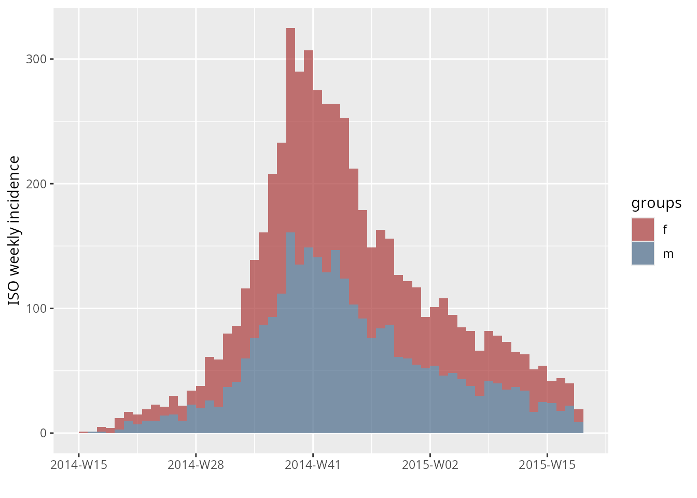
plot(i.hosp)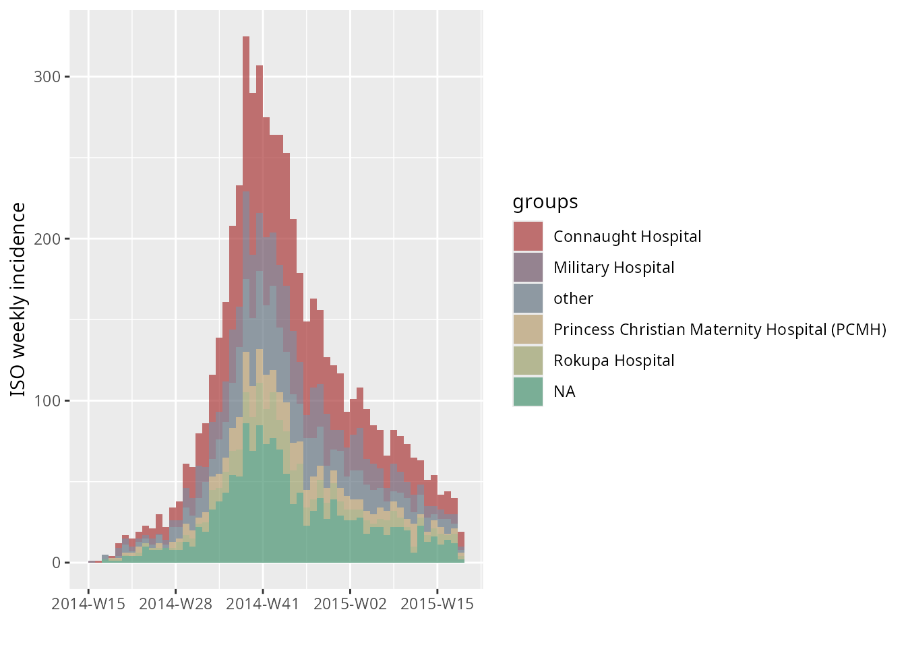
However, some of these defaults can be altered through the various arguments of the function:
args(incidence:::plot.incidence)
#> function (x, ..., fit = NULL, stack = is.null(fit), color = "black",
#> border = NA, col_pal = incidence_pal1, alpha = 0.7, xlab = "",
#> ylab = NULL, labels_week = !is.null(x$weeks), labels_iso = !is.null(x$isoweeks),
#> show_cases = FALSE, n_breaks = 6)
#> NULLChanging colors
The default palette
A color palette is a function which outputs a specified number of
colors. By default, the color used in incidence is called
incidence_pal1. Its behaviour is different from usual
palettes, in the sense that the first 4 colours are not
interpolated:
par(mfrow = c(3, 1), mar = c(4,2,1,1))
barplot(1:2, col = incidence_pal1(2))
barplot(1:4, col = incidence_pal1(4))
barplot(1:20, col = incidence_pal1(20))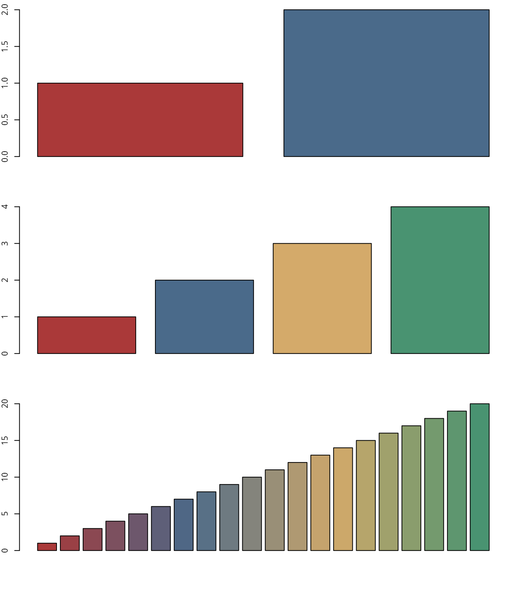
This palette also has a light and a dark version:
par(mfrow = c(3,1))
barplot(1:20, col = incidence_pal1_dark(20), main = "palette: incidence_pal1_dark")
barplot(1:20, col = incidence_pal1(20), main = "palette: incidence_pal1")
barplot(1:20, col = incidence_pal1_light(20), main = "palette: incidence_pal1_light")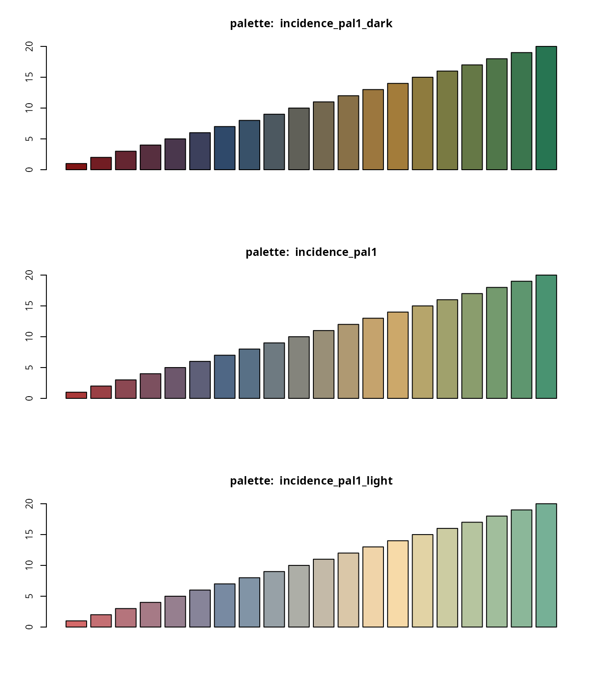
Using different palettes
Other color palettes can be provided via col_pal.
Various palettes are part of the base R distribution, and many more are
provided in additional packages. We provide a couple of examples:
plot(i.hosp, col_pal = rainbow)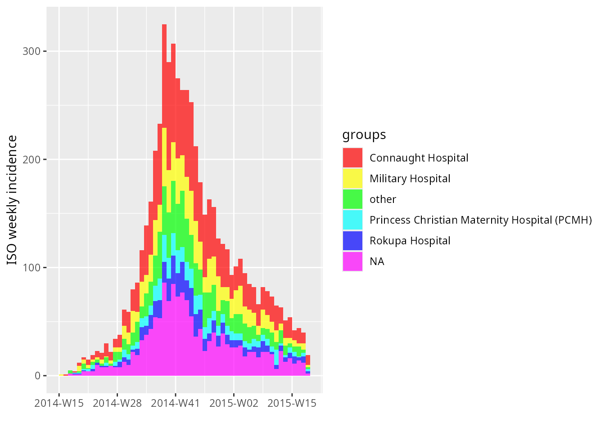
plot(i.sex, col_pal = cm.colors)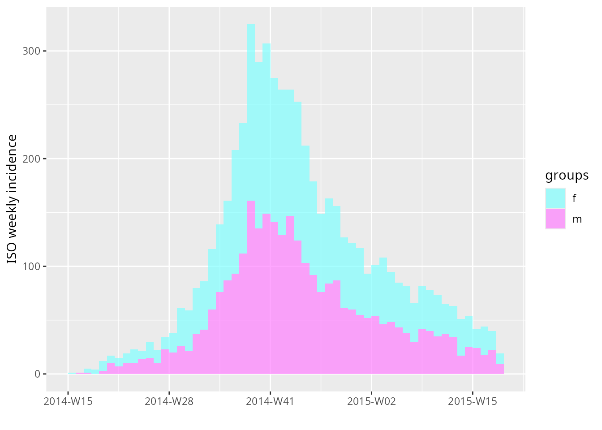
Specifying colors manually
Colors can be specified manually using the argument
color; note that whenever incidence is computed by groups,
the number of colors must match the number of groups, otherwise
color is ignored.
Useful ggplot2 tweaks
Numerous tweaks for ggplot2 are documented online. In the following, we merely provide a few useful tips in the context of incidence.
Changing dates on the x-axis
Changing date format
By default, the dates indicated on the x-axis of an
incidence plot may not have the suitable format. The package
scales can be used to change the way dates are labeled (see
?strptime for possible formats):
library(scales)
plot(i, labels_week = FALSE) +
scale_x_date(labels = date_format("%d %b %Y"))
#> Scale for x is already present.
#> Adding another scale for x, which will replace the existing scale.Notice how the labels are all situated at the first of the month? If
you want to make sure the labels are situated in a different
orientation, you can use the make_breaks() function to
calculate breaks for the plot:
b <- make_breaks(i, labels_week = FALSE)
b
#> $breaks
#> [1] "2014-04-07" "2014-07-07" "2014-10-06" "2015-01-05" "2015-04-06"
#> [6] "2015-07-06"
#>
#> $labels
#> list()
#> attr(,"class")
#> [1] "waiver"
plot(i) +
scale_x_date(breaks = b$breaks,
labels = date_format("%d %b %Y"))
#> Scale for x is already present.
#> Adding another scale for x, which will replace the existing scale.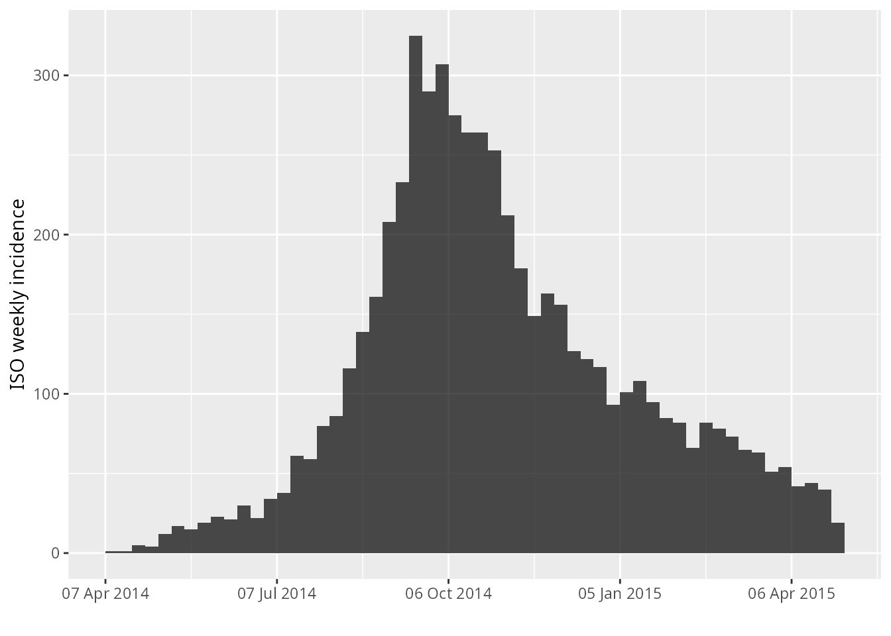
And for another example, with a subset of the data (first 50 weeks), using more detailed dates and rotating the annotations:
plot(i[1:50]) +
scale_x_date(breaks = b$breaks, labels = date_format("%a %d %B %Y")) +
theme(axis.text.x = element_text(angle = 45, hjust = 1, size = 12))
#> Scale for x is already present.
#> Adding another scale for x, which will replace the existing scale.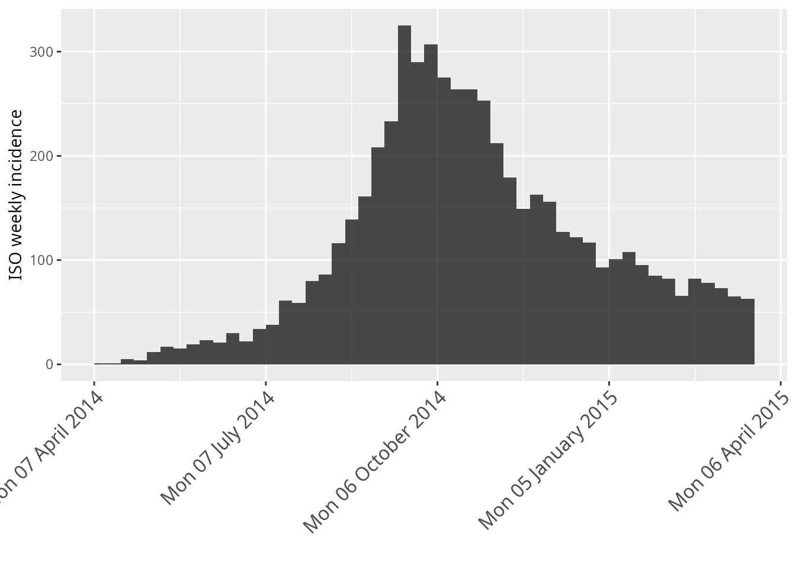
Note that you can save customisations for later use:
rotate.big <- theme(axis.text.x = element_text(angle = 45, hjust = 1, size = 12))Changing the grid
The last example above illustrates that it can be useful to have denser annotations of the x-axis, especially over short time periods. Here, we provide an example where we try to zoom on the peak of the epidemic, using the data by hospital:
plot(i.hosp)
Let us look at the data 40 days before and after the 1st of October:
period <- as.Date("2014-10-01") + c(-40, 40)
i.zoom <- subset(i.hosp, from = period[1], to = period[2])
detailed.x <- scale_x_date(labels = date_format("%a %d %B %Y"),
date_breaks = "2 weeks",
date_minor_breaks = "week")
plot(i.zoom, border = "black") + detailed.x + rotate.big
#> Scale for x is already present.
#> Adding another scale for x, which will replace the existing scale.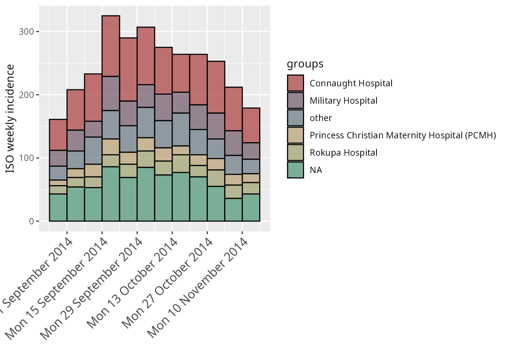
Handling non-ISO weeks
If you have weekly incidence that starts on a day other than monday, then the above solution may produce breaks that fall inside of the bins:
i.sat <- incidence(onset, interval = "1 week: saturday", groups = ebola_sim_clean$linelist$hospital)
i.szoom <- subset(i.sat, from = period[1], to = period[2])
plot(i.szoom, border = "black") + detailed.x + rotate.big
#> Scale for x is already present.
#> Adding another scale for x, which will replace the existing scale.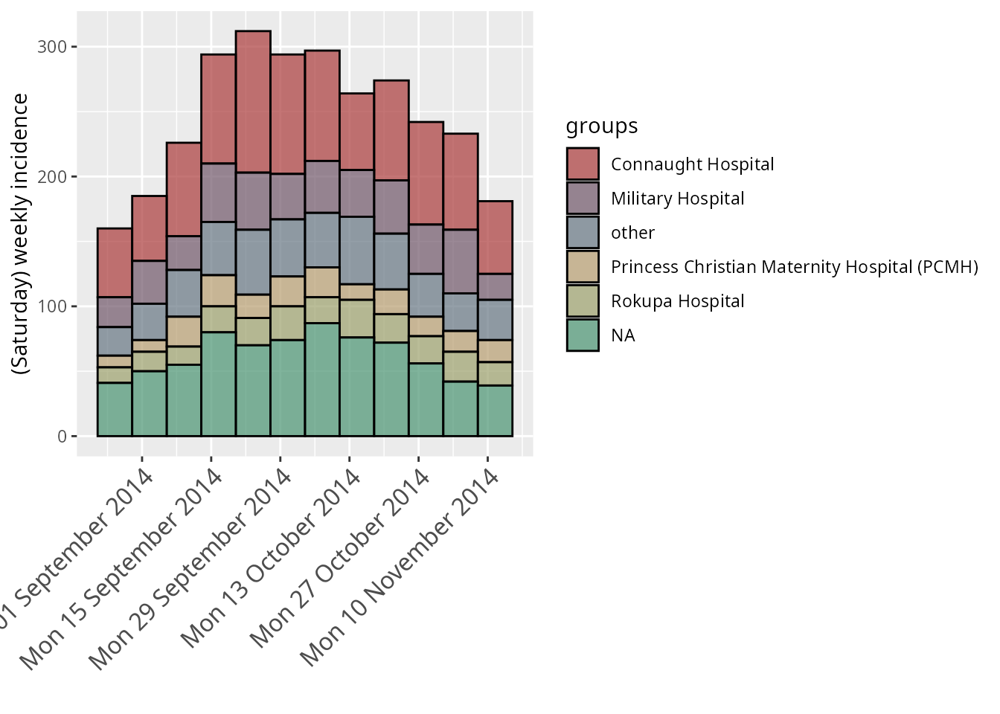
In this case, you may want to either calculate breaks using
make_breaks() or use the scale_x_incidence()
function to automatically calculate these for you:
plot(i.szoom, border = "black") +
scale_x_incidence(i.szoom, n_breaks = nrow(i.szoom)/2, labels_week = FALSE) +
rotate.big
#> Scale for x is already present.
#> Adding another scale for x, which will replace the existing scale.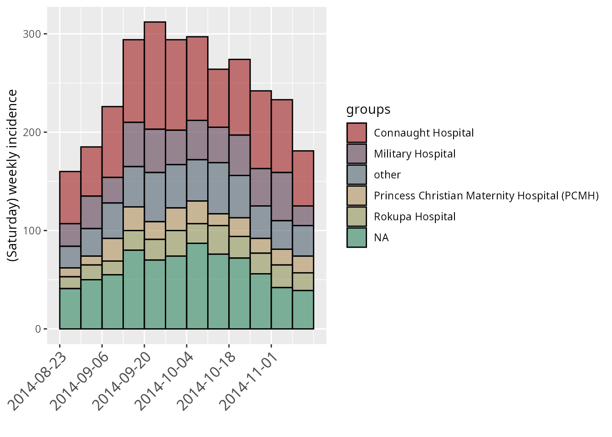
sat_breaks <- make_breaks(i.szoom, n_breaks = nrow(i.szoom)/2)
plot(i.szoom, border = "black") +
scale_x_date(breaks = sat_breaks$breaks, labels = date_format("%a %d %B %Y")) +
rotate.big
#> Scale for x is already present.
#> Adding another scale for x, which will replace the existing scale.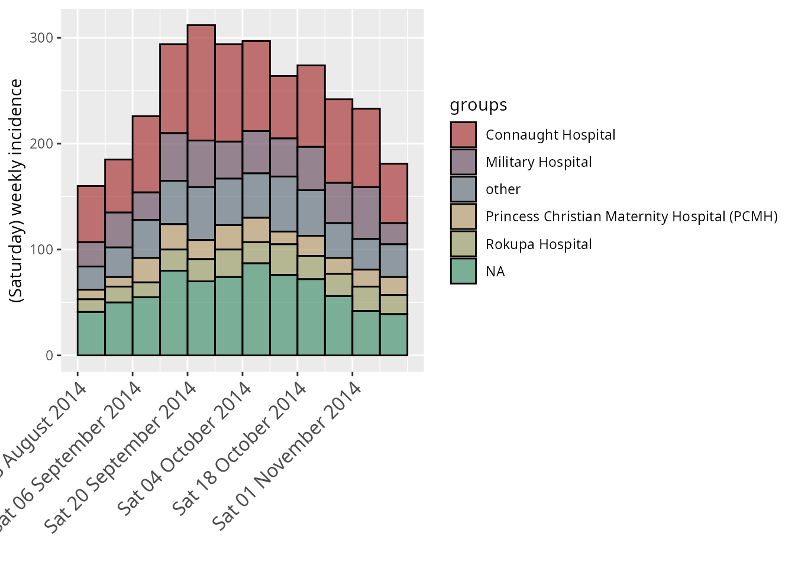
Changing the legend
The previous plot has a fairly large legend which we may want to move
around. Let us save the plot as a new object p and
customize the legend:
p <- plot(i.zoom, border = "black") + detailed.x + rotate.big
#> Scale for x is already present.
#> Adding another scale for x, which will replace the existing scale.
p + theme(axis.text.x = element_text(angle = 45, hjust = 1, size = 12),
legend.position = "top", legend.direction = "horizontal",
legend.title = element_blank())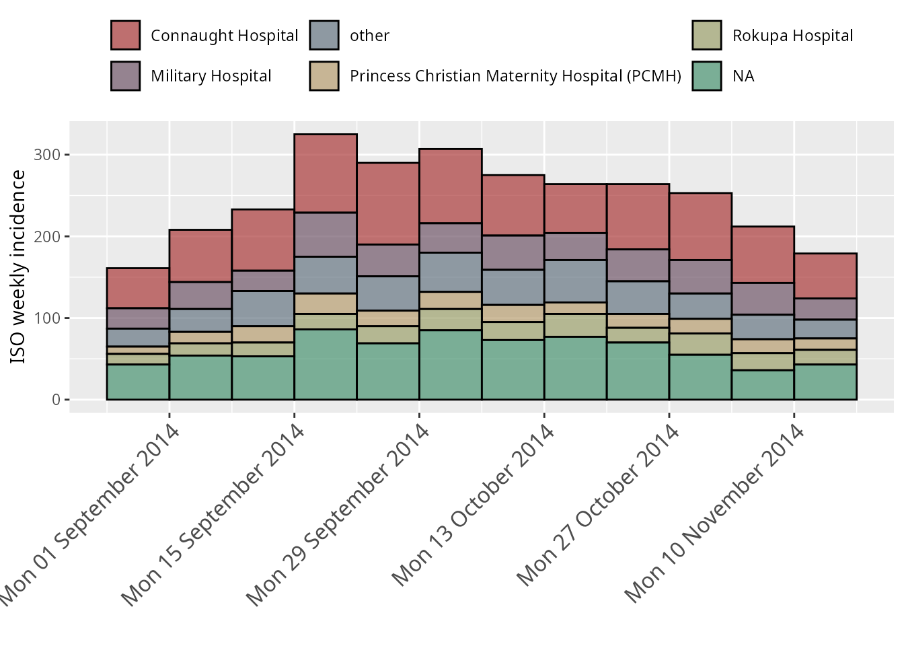
Applying the style of European Programme for Intervention Epidemiology Training (EPIET)
Display individual cases
For small datasets it is convention of EPIET to display individual
cases as rectangles. It can be done by doing two things: first, adding
using the option show_cases = TRUE with a white border and
second, setting the background to white. We also add
coord_equal() which forces each case to be a square.
i.small <- incidence(onset[160:180])
plot(i.small, border = "white", show_cases = TRUE) +
theme(panel.background = element_rect(fill = "white")) +
rotate.big +
coord_equal() 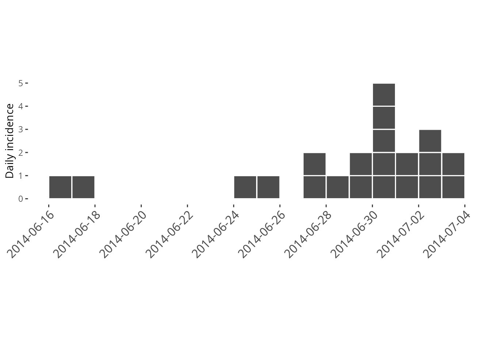